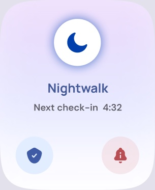
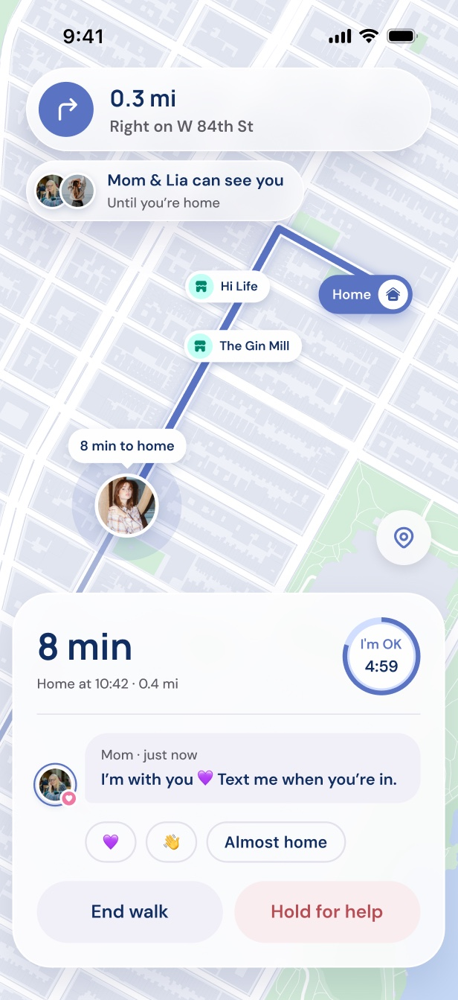
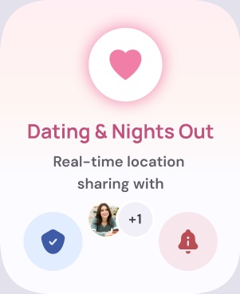
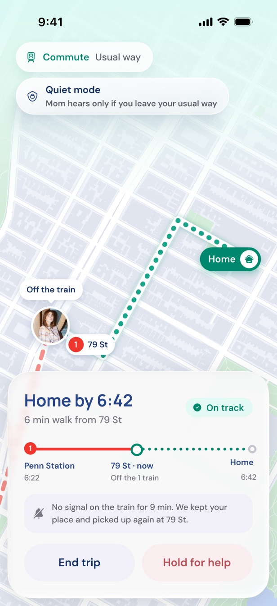
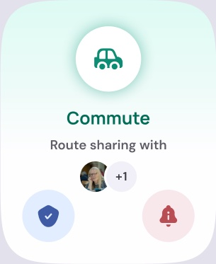
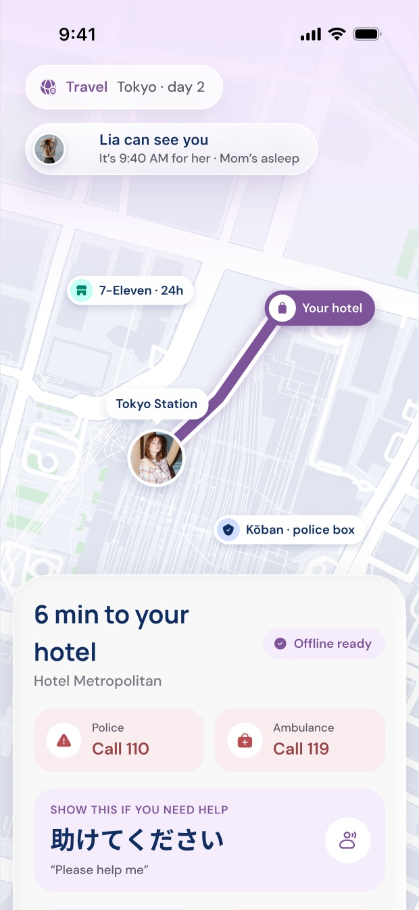
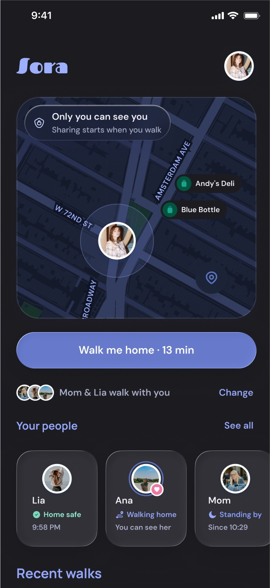
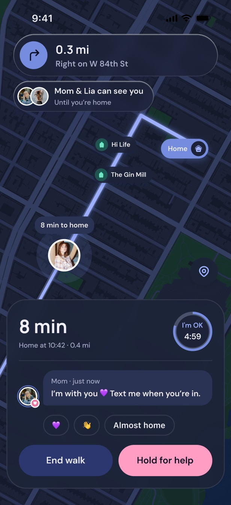

Safety companion for iPhone and Apple Watch
The friend who walks you home.
SORA shares her walk with the circle she chose, and only while she walks. When she gets home, sharing ends and the route is deleted.
- Red Dot Award Winner 2026
- MUSE Design Awards Silver
- iF Design Award 2027 entry


67%
Only 67% of women feel safe walking alone at night where they live.
Gallup Global Safety Report 2025
“Text me when you’re home.”
Women already look after each other: a text, a shared location, a friend on the phone until the door. Those habits work, but each one is manual, easy to notice, or left on long after the walk.
SORA keeps the habit and takes the work out of it. She picks a mode and taps once. Her circle comes along, and nobody is tracked once she’s home.
One walk, start to finish
Mei leaves a gig at 72nd Street. Home is 13 minutes away.
-
10:29 PM
Walk me home
One tap. Her route and her circle are already filled in. Until she starts, only she can see herself on the map.
-

10:34 PM
Walking together
Mom and Lia can see her until she’s home. Directions, check-ins, messages and Hold for help sit in one panel.
-

10:42 PM
Home safe
Sharing ends by itself and the route is deleted. Mom sends love back.
Four modes
Same friend, different nights.
Every mode keeps the same layout. Only the tint and the tools change.

01
Nightwalk
She picks the route and who walks with her. The busier way is suggested when more places along it are still open, and check-ins live on her wrist.


02
Dating & Nights Out
Lia knows who she’s with. “Call me away” and a ride home Lia can see are one tap away.


03
Commute
Quiet by default. Mom hears only if she leaves her usual way.


04
Traveling
Local emergency numbers, a help phrase in Japanese, and a map that works offline.
Quiet by design
Help that doesn’t draw attention.
In a tense moment, showing distress can make things worse. Every way to get help is quiet.
- Hold for help
- A long press, so a stray tap never sets it off.
- Digital Crown
- A double press on Apple Watch, without taking out her phone.
- Fake call
- A believable incoming call gives her a reason to step away.
If she misses a check-in, help builds in three steps.
-
0:00
Silent alert
Her circle gets her live location. Nobody near her hears a thing.
-
1:00
Audio deterrent
Her phone and Watch speak a prompt and vibrate, so anyone nearby knows she isn’t alone.
-
2:00
Emergency services
If she still hasn’t answered, SORA contacts emergency services.
“I’m OK” stops it at any step.
Shared only while she walks
Shared while she walks. Deleted when she’s home.
Location sharing is useful for a walk and risky as a habit. In SORA it exists for the walk itself, and only for the circle she chose.
She starts a walk
Sharing turns on with one tap, for her circle only.
While she walks
Her circle sees her route and her check-ins.
She gets home
Sharing ends by itself. Nobody has to remember to stop it.
After that
The route is deleted. Nothing keeps tracking her.
After dark
The same friend, after dark.
A deep Midnight blue instead of alarm black. The layout, tints and actions stay where she expects them, so opening SORA never raises her pulse.


Design language
One layout. Four tints. Three colors that never change.
Mode tints
- Nightwalk
#DCD1F3 - Dating & Nights Out
#FAEEF0 - Commute
#E2F3F0 - Traveling
#F0EAF7
Actions
- Walk me homeStart · #5C74C4
- Hold for helpHelp · #BC4C54
- I’m OKStop · #04846C
Type
Aa
Manrope for headings
Aa
DM Sans for text
Recognition
Recognized by international design juries.
Red Dot Award
Winner
MUSE Design Awards
Silver
iF Design Award
2027
What changed since Red Dot 2026

About & team
Built by women, for women.
Four designers, one brief: a friend who walks you home.